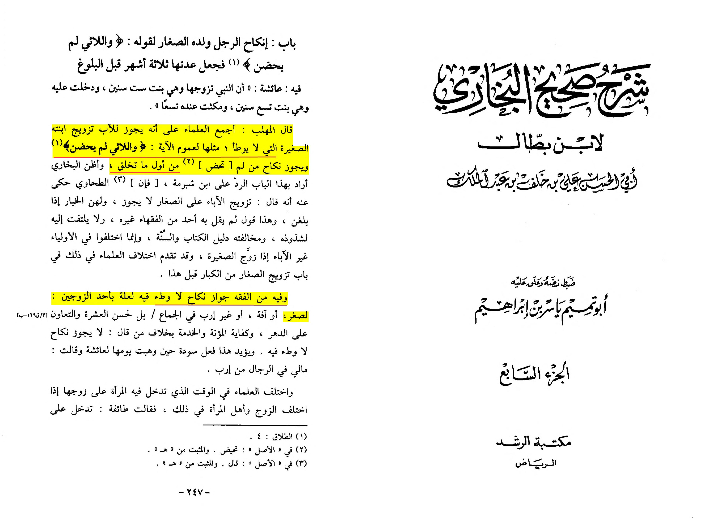
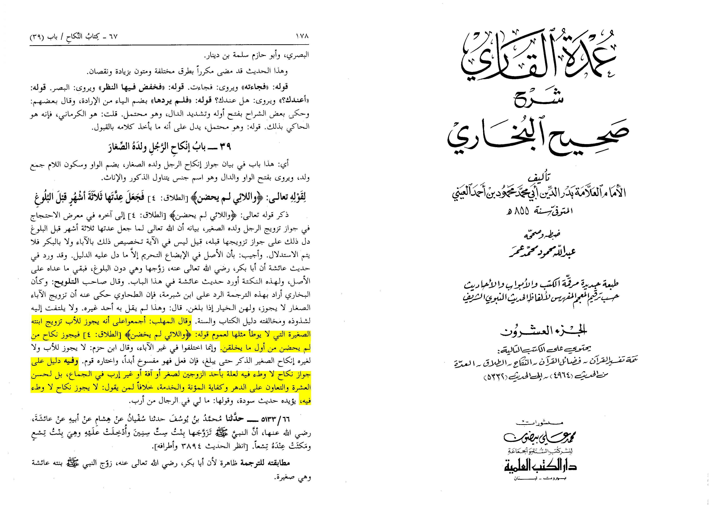
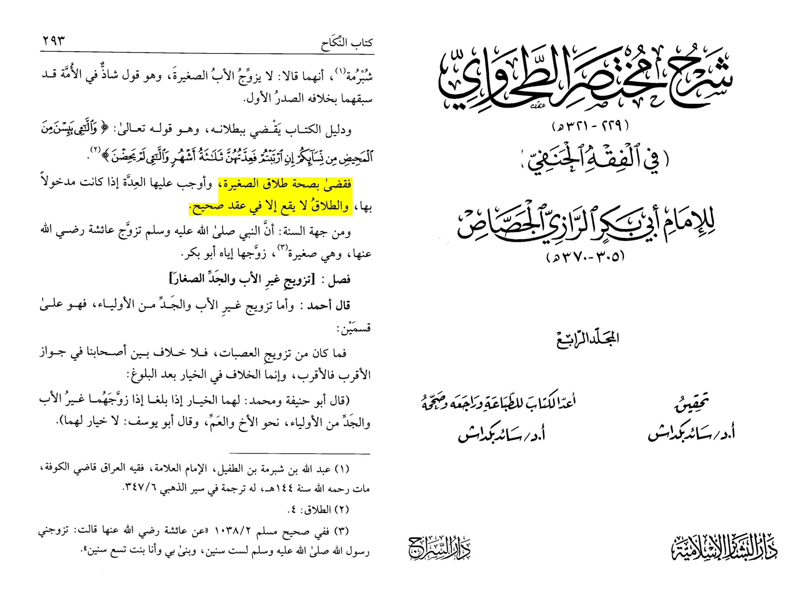

Bismillah al-Rahman al-Raheem
65:4 is the one of the most commonly misunderstood verses in the Qur’an, this verse is used as an evidence by non Muslims and some extremist Muslims alike to point to the permissibility of cohibating with somebody who has not menstruated.
They derive their interpretation of this verse from a false understanding of the scholarly commentaries on this verse and what it actually means.
They will commonly cite tafsirs such as Ibn Kathir’s tafsir in order to prove such.
However they do not realise what exactly in the verse the scholars intended when they said that this verse supports marrying a minor.
___
This channel will specifically cover the doubt they brought above, it will not cover the actual details of a father contracting a minor marriage, the details surrounding it, it’s historical context and whether this can still happen today.
___
Ibn Battal al-Maliki and Badr al-deen al-Ayni al-Hanafi write:
“The scholars have agreed that it is permissible for the father to marry off his minor daughter who those of her age are not capable of having sexual intercourse due to the generality of his saying: «and those who have not menstruated», so the marriage contract of someone who hasn’t menstruated is permissible even from the beginning of their (the daughter or boys) creation.”
Then they say:
“A jurisprudential ruling is derived from this that a marriage contract which has no sexual intercourse stipulated in it is permissible, this can be due to a defect such as being a minor.”


As we can see from the quotes above 65:4 was used as an evidence for two things:
The validity of a father contracting his daughter or son in a minor marriage
The validity of a marriage contract which does not have any stipulation of cohabition
___
Anti Islam apologists have errouneously assumed that the evidence from this verse is that a female who has not menstruated is valid to cohibate.
This is totally false, the quotes above negate that. The evidence from this verse is that a valid ‘Idda in Islamic law does not happen except with a valid divorce (talaq) and a valid divorce does not happen except if there is a valid contract.
As it is known in Islamic law that a marriage contract of a minor does not necessitate having full normal marital relations but rather it’s more of a betrothal.
___
What further supports this is the usage of the great mujtahid Hanafi jurist Ahmad Abu Bakr al-Razi al-Jassas of this verse, he uses it in the exact same way the scholars did above and said that the perspective of evidence is from that there is a valid contract only.
